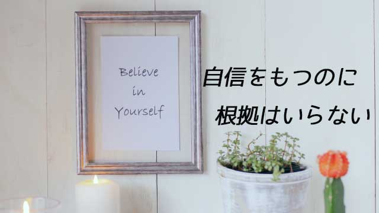

大人でも子どもでも、多くの人は根底に「自信のなさ」を抱えている。何かにチャレンジするとき、初めての試みに乗り出すとき人は「自分にできるだろうか」「失敗したらどうしよう」という不安や恐れを感じるものだ。
不安や恐れを感じること自体は実は問題ではない。特に自分のやろうとしていることが、今まで経験したことのない未知の領域に踏み出すことなら不安や心配、恐れを感じるのは生物として自然な反応だからだ。それは危険に対する一種の防衛反応に過ぎない。
ただ、そんな大げさなことでなく、ちょっとした行動や決断、少しばかりの勇気さえ出せば済む場面でもそれができずためらう人の何と多いことか。
「入試などで少しレベルの高い学校を設定する」
「仕事でもっとうまく行くプランを提案する」
「他人の過ちを指摘して正しい方向に向かう手助けをする」
「電車で老人や妊婦に席を譲ってあげる」
「新しい思いつきを実行する」
ほんの少しの決断と行動なのに躊躇してしまう。ここに共通する心理は「失敗したくない」「拒絶されたくない」という恐れだが、結局のところ自分に対する信頼の欠如だと思う。
確かにチャレンジしたところでうまく行くとは限らない。志望校に落ちるかも知れないし、新しい提案はスゲなく却下されるかも知れない。せっかく相手のためと思っても迷惑がられたり拒絶されることもある。
だが、それを恐れるあまり「そんな目に合うくらいなら始めから何もしない」と決めこむのは、人生の充足と幸福を放棄するのと一緒だ。こういう人はとても多い。
それは、失敗を恐れて失敗の人生を歩むようなものだ。
なぜならいつでも一見「失敗」と思えることの中に、次の飛躍（成功）の鍵が隠されているからだ。人生をトータルでながめるとプロセス上に現れる「失敗」は失敗ではない。
成功に至る一里塚なのだ。
失敗とは、失敗を恐れる余り真にやりたいことをやらないでいることであり、ただ一度の挫折から2度とチャレンジしないことを指す言葉なのだ。
だからここでの問題は、失敗そのものではなく失敗への不安や恐怖をいかに乗り越え本来の「自信」を取り戻すかにある。
自信とは生まれもった肯定感
ところで自信ある人間とはどんな人だろうか。
「あいつは自信満々な奴だ」などと言うと、ハナ持ちならない傲慢な人物を想像するかも知れない。あるいは社会的な成功者や有名人などを思い浮かべるかも知れない。
しかし、そういう人が必ずしも自信に満ちているとは限らない。自信があるように見せていても内実は、心の奥底に自己不信を抱えている人もいる。むしろ本物の自信がないからこそ地位だとか名誉など外側の条件にしがみついていることも珍しくないからだ。
実は真の自信とは、何かを成し遂げたからとか特別の才能があるから持てるというものではない。もちろん、それまで自信のなかった人が何らかの成功体験によって自信を持てるようになりその後の展望が開けて行くという例はあるだろう。
しかしそれでも、外側の何かを獲得することで自信を持てると条件づけている限りその人は心の休まる暇はない。常に何かを獲得し、その何かを失うまいとアクセクしていないといけないからだ。自信の有無は条件次第だということになり、得たり失ったりする不安定なものということになる。
本来の自信とはそんなものではない。むしろ根拠や理由を必要としない性質のものだ。ゆるぎないものだ。人が普通言うところの「自信」とは表面的な気分のゆれに過ぎない。
それなら「本来の自信」とは何だろう。
それは自分に対する生得的な肯定的感情であり、ありのままの自分で良しとする絶対的信頼感のことである。「自分には何も欠けたものはなく愛に満たされ何でもできる」という感覚のことだ。
心理学者はこれを幼児期特有の「万能感」と呼ぶが、私は自己信頼感と名づけたい。
自分と世界に対する信頼感のことだ。この感覚の上に「自分は存在するだけで愛されている」という強い自己肯定の感情が漂う。
これが原初の自信、本来誰もが生まれもつ自信のことだ。私たちは忘れているがこの感覚を持って生まれてきた。
しかし、この「自信」は５～６歳頃になると覆い隠されてしまう。
「～してはいけない」「もっと～しなさい」「そんなことじゃ～できないのよ」と言われ続けるからだ。
ありのままの自分を思い出す
学齢期を過ぎる頃になると多くの人はこうして様々な禁止や制限の中で「本来の自分」を忘れていく。それと共にあの天真爛漫な「自信」もすっかり影をひそめてしまう。
だがこれは親や周囲の大人に悪気があるのではない。ただ社会のルール、規範や道徳を植えつけてあげたいと思っているだけなのだ。
「社会でうまくやっていける人間」作りのつもりなのだ。それが子どもの才能や特質に制限を加え、型にはめる行為などとは考えもしないのだろう。
ただ我が子が失敗しないよう恐れているからに他ならない。
だが子どもにすれば、親や教師の「失敗しないため」の禁止命令は「ありのままの自分ではいけない」「自分には欠けたところがある」「本当の自分を出したら愛されない」という強いメッセージとなって心に刻まれる。
下手をすれば「ダメな自分」「不完全な自分」というイメージがアイデンティティとなる。そのために「もっとガンバらなければ認めてもらえない」という強迫観念に囚われますます外側の「成果」を求めてしまう。何かを達成すれば認めてもらえ自信も回復するだろうというメンタリティだ。
しかし先にも言ったように、外側の何かを獲得することで自信を持つことは本来あり得ない。とりわけ出発点に「欠落感」や「不足感」「自己否定感」がある限り、やはり欠落や不足を感じざるを得ない状況を引き寄せてしまうからだ。
こうなると自信を持つどころか、かえって失敗の恐怖ばかりが募り身動きがとれなくなる。このループに陥っている人の何と多いことか。
どうすればこのループから抜け出すことができるか。恐れることなく自信を持つことができるのか。
その答えは今まで書いて来た中にある。
つまり「本来の自己」を思い出すことが第一であり、その本来の自己とは欠落などなく平和で信頼に満ちている。そのことを思い出すことだ。自分には欠けたところがあり、自己否定の気持ちがあるなら、それは本当ではなく成長過程でそう思い込まされていたものに過ぎない。それが真実であると知ることだ。
何か特別なことを成し遂げていないから自信が持てないのではない。「本来の自分でいる」ことこそが自信の源泉であるのに、自分じゃない者になろうとしていたから自信を持てないが正しい。だから本来の自分を思い出すことで自信もよみがえる。
私は長く教育の仕事をしてきて、多くの子どもを見てきたがどんな子にも光るものがあった。それは何かができるからとか、こんな才能があるからという「理由」だけでなく、もっともその子らしくあるときが一番輝いているといつも実感してきた。
経営者としてたくさんのスタッフと働いているときも彼らに同じことを感じていた。
誰もが本来の自分、ありのままの自分でいるときが美しく自らの力も十全に発揮できるということ。それなのにそのことを忘れ、他人の評価や世間で「正しいとされること」に自分を合わせて生きるから苦しくなるのだということ。
それはたとえて言うなら、本当はもっと大きな身体（存在）なのにムリヤリ小さなサイズの洋服（世間の価値観）に合わせようとしている姿に見える。
ほとんどの人は「自分」を実体より小さく見積もっている。自分はこの地球上に生きる大勢の中の小っぽけな存在に過ぎないと思って過ごしている。
そうではない。そう教え込まれてきただけだ。本当は人は自分が思うより偉大な存在なのだ。
あなたはあなたが思うより偉大な存在だ
この言葉を静かにかみしめて欲しい。そんな考えは不遜だとか傲慢ではないかと恐れずに。一切の感情を差しはさまずニュートラルにくり返して欲しい。そのときわき上がる思いこそが本来の自信であり、これを感じ続けることが見かけの成功や失敗を超えた人生の充実へ至る道となる。